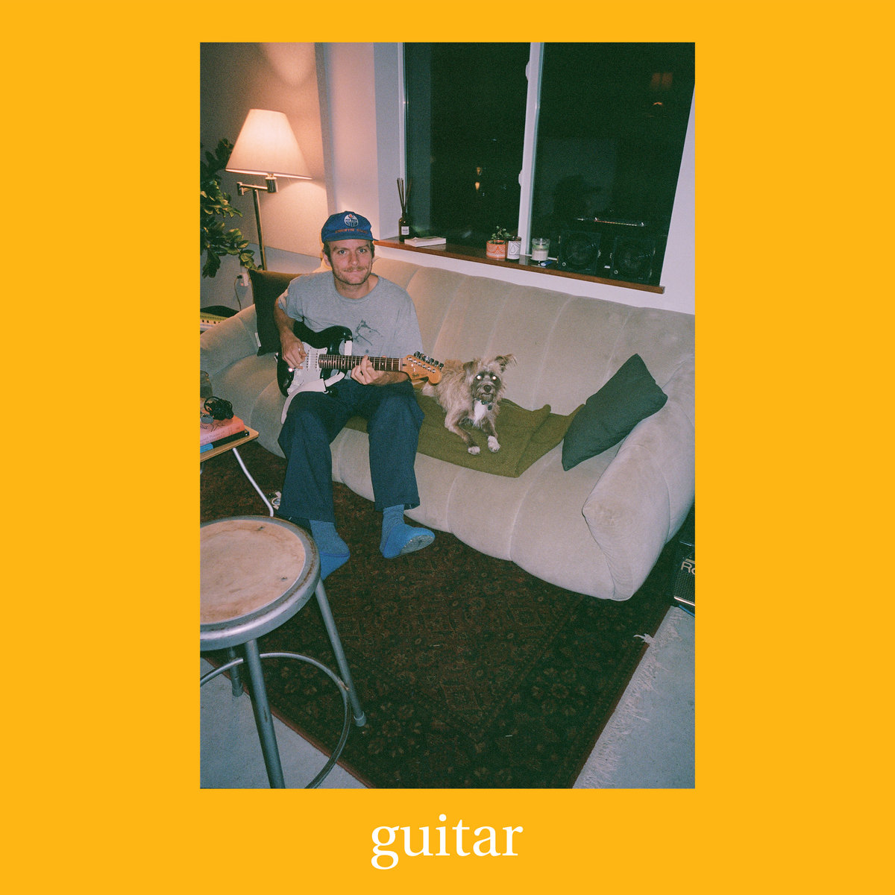

Meu Top 5 Artistas
Aqui vai um top 5 bem pessoal, com artistas que eu gosto bastante e que acho que vale a pena ouvir com calma. A ideia é dar um álbum de entrada e duas músicas de cada um para você ter um ponto de partida.
- Mac DeMarco – Guitar
- IDLES – CRAWLER
- Gorillaz – The Now Now
- Arctic Monkeys – The Car
- Joji – BALLADS1
Você pode ouvir na plataforma que preferir (Spotify, YouTube, etc.). O legal é ouvir o álbum inteiro, mas se estiver sem tempo, começa pelas músicas indicadas abaixo.
Mac DeMarco – Guitar
Mac DeMarco tem aquele som calmo, meio “domingão de tarde”. O álbum Guitar é uma boa porta de entrada se você curte algo mais leve e relaxado.
- Home – ótima para ouvir tranquilo, tem uma atmosfera bem aconchegante.
- Sweeter – mais melancólica e suave, boa para ouvir à noite.
Se quiser ver mais coisas sobre ele: Site oficial do Mac DeMarco
IDLES – CRAWLER
IDLES é bem mais agressivo e intenso, com letras fortes e som pesado. O CRAWLER mistura essa energia toda com momentos mais lentos e climáticos.

- Progress – começa mais contida e vai crescendo, bem tensa.
- The Beachland Ballroom – uma das músicas mais emocionais da banda.
Mais informações: Site oficial do IDLES
Gorillaz – The Now Now
Gorillaz é aquela mistura de rock, eletrônico e hip hop com uma identidade visual muito forte. Em The Now Now, as músicas são mais diretas e melódicas.

- Kansas – faixa mais calma, com clima meio nostálgico.
- Magic City – batida gostosa e atmosfera bem envolvente.
Mais conteúdos e novidades: Site oficial do Gorillaz
Arctic Monkeys – The Car
Em The Car, o Arctic Monkeys está mais maduro e “chique”, com arranjos cheios de detalhes. É bem diferent de Mac DeMarco e da fase mais roqueira do começo da banda.

- Mr Schwartz – bem elegante, com cara de trilha sonora de filme.
- Perfect Sense – fecha o álbum, então é legal ouvir como conclusão.
Saiba mais: Site oficial do Arctic Monkeys
Joji – BALLADS1
Joji mistura R&B, lo-fi e uma vibe bem triste. BALLADS1 é ótimo se você gosta de músicas mais lentas e emocionais.

- SLOW DANCING IN THE DARK – provavelmente a mais famosa do álbum, bem melancólica.
- YEAH RIGHT – fala de frustração e desilusão, com uma batida arrastada.
Para mais informações: Site oficial do Joji
Tabela Resumida das Recomendações
| Artista | Álbum | Músicas Indicadas | |
|---|---|---|---|
| Faixa 1 | Faixa 2 | ||
| Mac DeMarco | Guitar | Home | Sweeter |
| IDLES | CRAWLER | Progress | The Beachland Ballroom |
| Gorillaz | The Now Now | Kansas | Magic City |
| Arctic Monkeys | The Car | Mr Schwartz | Perfect Sense |
| Joji | BALLADS1 | SLOW DANCING IN THE DARK | YEAH RIGHT |